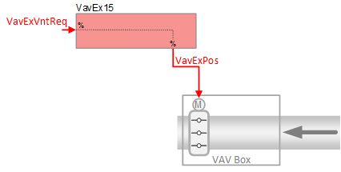
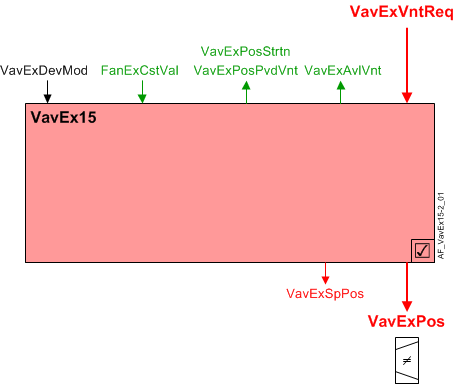
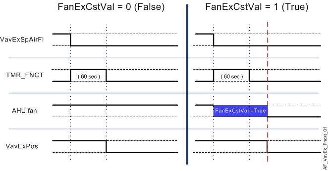

抽取空气 VAV 箱，压力相关控制 (VavEx15)
 | 该应用程序功能操作modulation of a damper。由此产生的风量变化为pressure dependent. 空气体积流量设定值是根据抽气流量的要求计算的，相对于流经供应终端的空气量，遵循以下原则：«extract tracks supply». 此AF中，风道面积仅供用户参考；它不用于阻尼器位置计算。没有系数对象或系数计算逻辑。 Air balancing通过手动更改最小和最大风门位置设定点来提供功能。 |
Required elements and how to configure them:
元素 | I/O | 信号类型 |
|---|---|---|
VavExPos "Extract air VAV position" | On-board output, Extract air VAV position | 0…10Vor3-position |
orKNX PL-Link device, 抽取空气 VAV | Position control |
Function
下图显示了与此应用程序函数关联的 BACnet 对象。主要信号流程总结如下：
VAV 提取通气请求（VavExVntReq> [控制器]VavExPos).
基本功能：接受来自相关房间控制器的请求信号并将其映射到风门位置设定点；在将结果作为命令输出到控制排气风门位置的对象之前，将结果传递给设备模式逻辑开关。

| 命令或请求（或相关） |
| 条件或状态或可用性的通知 |
| 设备模式 |


Saturation signal:饱和信号 (VavExPosStrtn) 是一个二进制对象，当 VAV 抽气终端在超过内置时间延迟的时间内无法获得足够的空气时，该信号为 True（“饥饿”）。
Note
如果参数 VavExPosStrtn 始终关闭EnStrtnCal= 0（否）。这允许用户从饱和压力重置系统中排除特定终端。
Available status:当 VAV 排气风门可用于排气通风时，指示可用性的二进制输出信号（VavExVntReq）将为“是”（可用）。
要使可用状态为“是”，设备模式必须等于“控制模式”（调制）。
Device mode:设备模式的输入信号是多状态值。
VavExDevMod支持以下状态：
- Off
- Control mode (modulation)
- Max.air vol.flow
- Min.air vol.flow
- Smoke ctrl.air flow setp (manually entered damper setpoint value for smoke control)
Fan coasting feature:风扇滑行功能可防止 AHU 风扇滑行时过早关闭排气风门。在操作模式之间切换（例如，从舒适模式切换到经济模式）期间可能会发生这种情况。
风扇滑行功能在以下情况下激活：
- The extract air damper is the only extract damper that is open – all other extract air dampers are closed.
- The AHU fan has been turned off and is coasting down.
- The damper position setpoint signal (VavExSpPos) while on its way to zero, falls below the air flow demand hysteresis setting (HysPosDmd).
当这些条件为真时，布尔抽气风扇惯性滑行信号 (FanExCstVal) 将等于 1 (True)，并且风门将重置为其最后（之前）的操作位置/值。这使得风门在风扇惯性滑行时保持打开状态，以防止排气管道过压。
除了将风门冻结到位的风扇惯性滑行信号之外，当 (VavExSpAirFl) 最初降至 (HysPosDmd) 以下时，还会激活内部定时器功能。风扇惯性滑行信号和计时器（60 秒）必须同时完成（返回 False），抽气风门才能关闭。见下图。
Note
内部定时器独立运行，与 VavExSpPos 无关。一旦计时器被激活，排气风门就会冻结在适当的位置，直到计数器达到零，之后风门可能会关闭。

Configuration
 Objects
Objects
描述 | 目的 | 类型 | 默认值 |
|---|---|---|---|
Air flow settings | |||
Extract air VAV smoke control setpoint position | VavExSpPosSmk | ACnfVal | 50 [%] |
Extract air VAV maximum position for ventilation | VavExPosMaxVnt | ACnfVal | 100 [%] |
Extract air VAV mininimum position for ventilation | VavExPosMinVnt | ACnfVal | 0 [%] |
Duct | |||
Extract air VAV duct area | VavExDuctArea | ACnfVal | 0.05 [m2] |
Extract air VAV duct shape | VavExDuctShape | MCnfVal | 2:Round |
Extract air VAV dimension A | VavExDmsnA | ACnfVal | 20 [cm] |
Extract air VAV dimension B | VavExDmsnB | ACnfVal | 20 [cm] |
 Parameters
Parameters
描述 | 范围 | 默认值 |
|---|---|---|
Saturation calculation | ||
Enable saturation calculation 饱和信号计算逻辑： 0:No | EnStrtnCal | 1:Yes |
Saturation level | StrtnLvl | 90 [%] |
Switch-on delay saturation | DlyOnStrtn | 60 [s] |
Position demand | ||
Switch-on point for position demand | SwiOnPtPosDmd | 4 [%] |
Hysteresis for position demand | HysPosDmd | 2 [%] |
Rate limitation for position | RateLmPos | 60 [s] |
Interface
界面 | 描述 | 类型 | 参考号 | 拥有者 |
|---|---|---|---|---|
VavExPos | Extract air VAV position | AO | ◉ | Room segment / Device |
VavExSpPos | Extract air VAV setpoint position | APrcVal | ● | - |
VavExPosStrtn | Extract air VAV position saturation 0:Satisfied | BCalcVal | ● | - |
VavExDevMod | Extract air VAV device mode 1:Off | MPrcVal | ● | - |
VavExVntReq | Extract air VAV ventilation request | ACalcVal | ● | - |
VavExAvlVnt | Extract air VAV available for ventilation 0:No | BCalcVal | ● | - |
FanExCstVal | Coasting value of extract air fan 0:Off | BCalcVal | ● | - |
VavExSplyAir | Extract air VAV supply chain for air | GrpMbr | ● | - |
VavExBalSta | Extract air VAV balancing state 1:Initial | MCnfVal | ● | - |
VavExDuctArea | Extract air VAV duct area | ACnfVal | ● | - |
VavExDuctShape | Extract air VAV duct shape 1:Rectangular | MCnfVal | ● | - |
VavExDmsnA | Extract air VAV dimension A | ACnfVal | ● | - |
VavExDmsnB | Extract air VAV dimension B | ACnfVal | ● | - |
VavExSpPosSmk | Extract air VAV smoke control setpoint position | ACnfVal | ● | - |
VavExPosMaxVnt | Extract air VAV maximum position for ventilation | ACnfVal | ● | - |
VavExPosMinVnt | Extract air VAV mininimum position for ventilation | ACnfVal | ● | - |
Engineering and commissioning
检查风门执行器安装是否正确。执行器接线错误或安装不当是常见问题的主要原因。